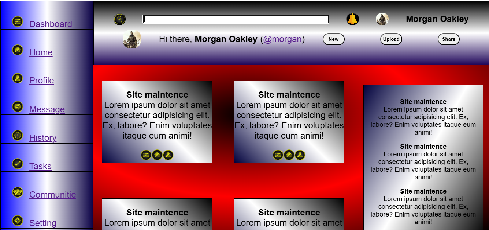
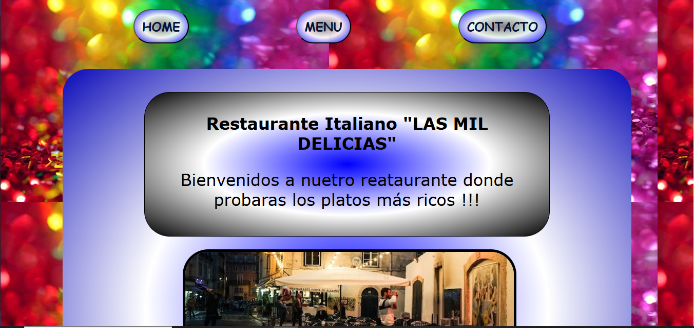
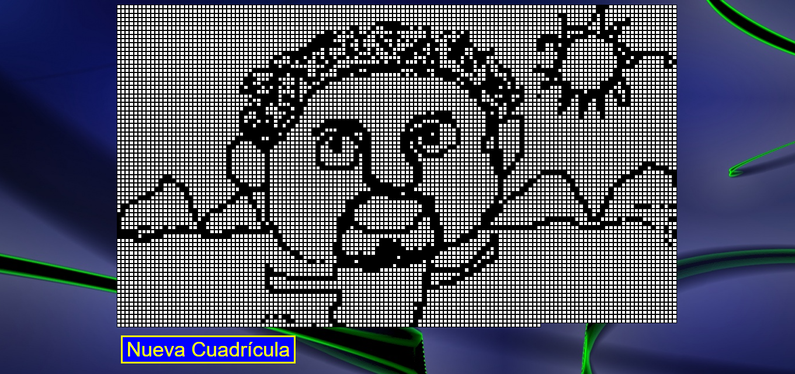
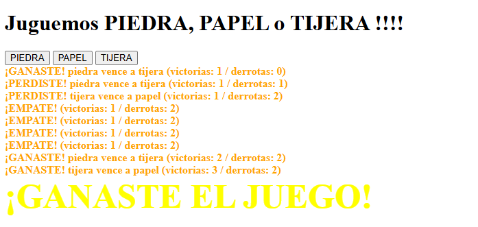
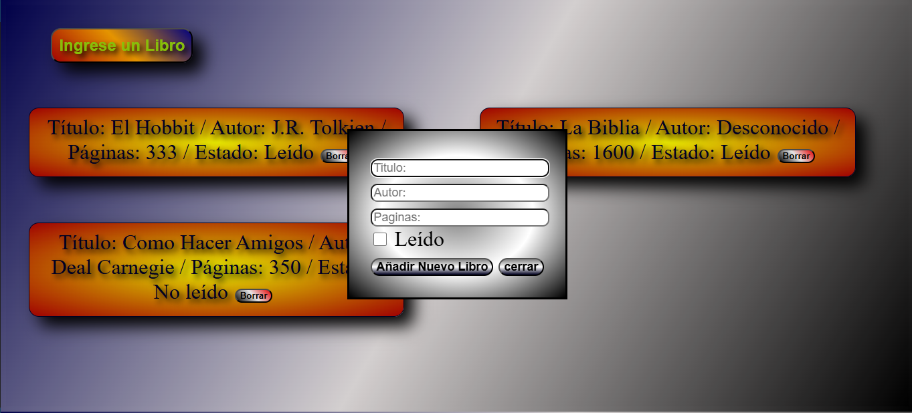

Proyecto Panel de Administracion . Aplicar los conceptos aprendidos de "Grid" del curso de HTML/CSS intermedio (The Odin Project Academy)
Proyecto Tic-Tac-Toe . Aplicar los conceptos aprendidos de "Grid" del curso de HTML/CSS intermedio (The Odin Project Academy)

Proyecto Restaurante web-site . Aplicar los conceptos aprendidos de "Grid" del curso de HTML/CSS intermedio (The Odin Project Academy)

Proyecto Block de Dibujo . Aplicar los conceptos aprendidos de "Grid" del curso de HTML/CSS intermedio (The Odin Project Academy)

Proyecto Piedra, Papel o Tijera . Aplicar los conceptos aprendidos de "Grid" del curso de HTML/CSS intermedio (The Odin Project Academy)

Proyecto Libreria . Aplicar los conceptos aprendidos de "Grid" del curso de HTML/CSS intermedio (The Odin Project Academy)